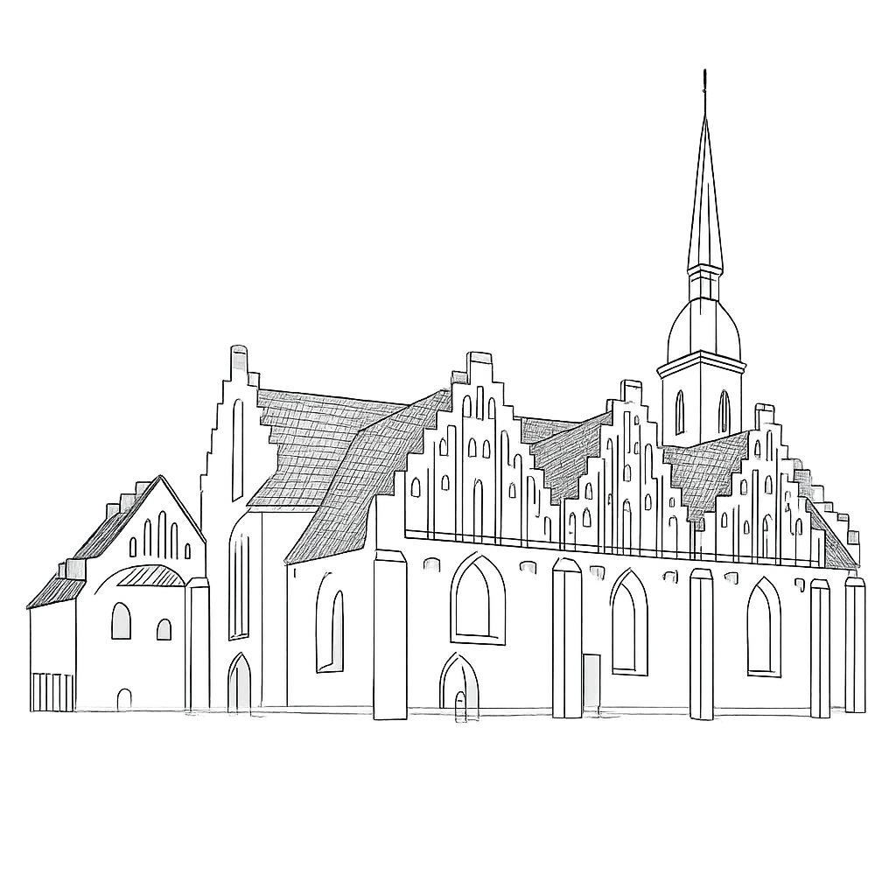

Lad os fejre kærligheden!
Her på siden kan du finde informationer omkring:
Program
Oversigtskort
Parkering
Overnatning
Ønskeliste
Dresscode
Beskeder fra brudeparret
Kontaktoplysninger
Tjek gerne Beskeder fra brudeparret i ugerne, dagene og timerne op til dagen for information om eventuelle ændringer i programmet.
Vi glæder os til at dele dagen med dig!
Kærlig hilsenLasse & Katrine
Program
Brødtext
Oversigtskort
Her kan du finde lokationer for kirke, parkering og reception.
Parkering
For parkering henvises der til parkeringskælder under Navitas, Inge Lehmanns Gade 10, 8000 Aarhus C .
Det koster 16 kr pr. time indtil kl. 16.00 og derefter gratis resten af lørdagen og hele søndagen.
Vi ønsker, at man parkerer bilen og går til kirken. Efter kirken vil vi gå i samlet flok til Honnørkajen, hvor der vil være mad, musik og spil.
Overnatning
Vi håber meget, at I vil booke overnatning, så vi kan feste med jer hele aftenen. Husk at der vil blive serveret morgenmad søndag morgen jf. Program. Find her relevante muligheder for overnatning:
Hotel Atlantic (10 min. gang) er tættest på, men også det dyreste. Derudover findes der
billigere alternativer ved ca. 15-20 min. gang:
Cabinn.
Danhostel Aarhus City.
Wakeup.
Alternativt søg på Airbnb.
Ønskeliste
Klik her for link til ønskeskyen.
Dresscode
Brødtext
Beskeder fra brudeparret
Vi glæder os til at dele dagen med dig!
Kontaktoplysninger
Brødtext